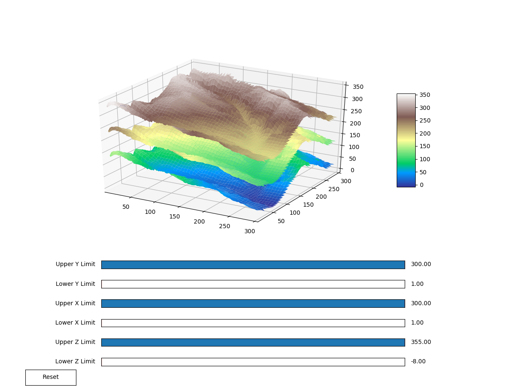
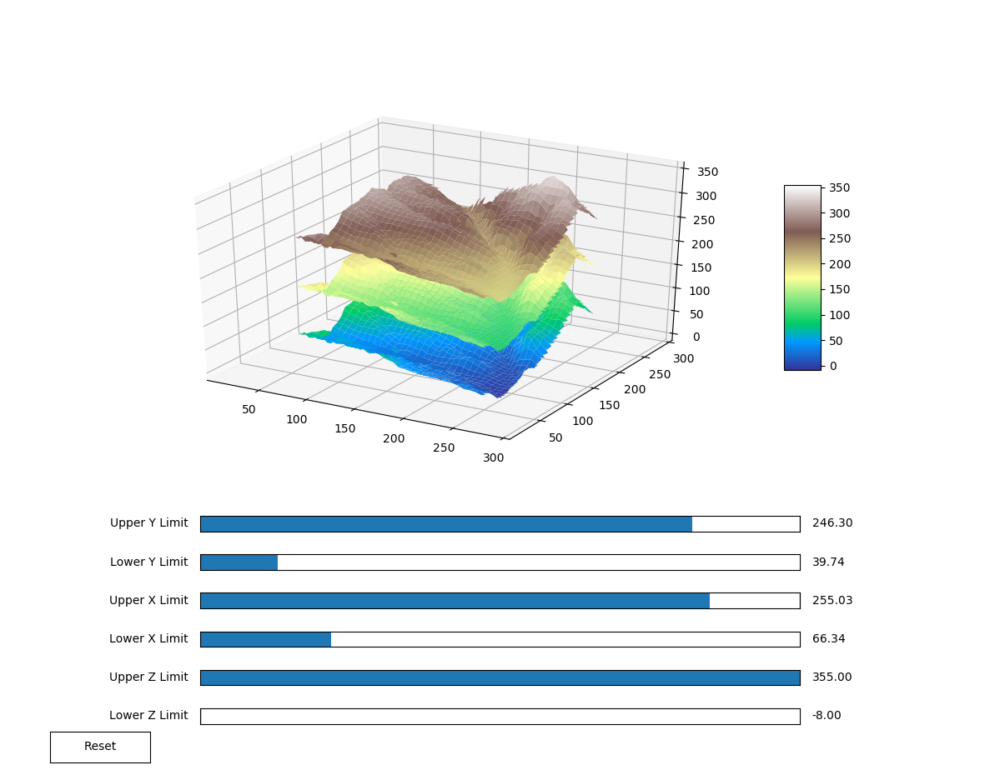

Interactive 3D Model

Plot surfaces in 3D and enable slicing along the x, y, and z axes.
Model takes in 3 .txt files contining elevation values and plots the data in an interactive figure. Slider bars allow the user to define maximum and minimum values for the model to be cut along any of its 3 axes.
 Website design and maintenance by Sarah Murray. Page updated June 2018.